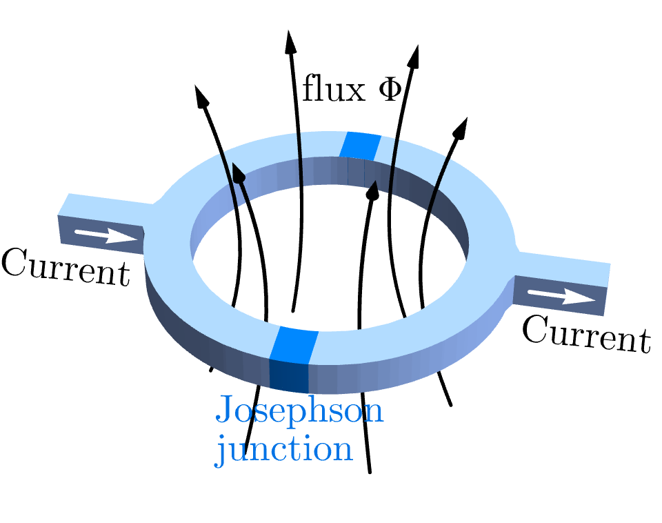

4.2.3 Flux Ring#
Prompts
A charged particle on a ring threads a perpendicular magnetic flux. How does the energy spectrum depend on the flux strength? What makes this periodic?
How does the Aharonov-Bohm effect manifest in the tunneling rate across the ring? Can you calculate it explicitly?
What is a persistent current? Why does it flow in the ground state of a flux ring?
How does the pi-flux case (\(\Phi = \Phi_0/2\)) differ from other flux values? What symmetries protect the degeneracy?
How does a macroscopic coherent wavefunction (such as a Cooper-pair condensate) on a closed loop quantize the enclosed magnetic flux into integer multiples of \(\Phi_0 = h/q\)? What role does the rigid-condensate condition \(\boldsymbol{j} = 0\) play?
What is a SQUID, and how does the flux ring model explain its operation and sensitivity?
Lecture Notes#
Overview#
A charged particle confined to a ring with a perpendicular magnetic flux provides a concrete, fully solvable model of the Aharonov-Bohm effect. The energy spectrum becomes periodic in flux, tunneling rates depend on the enclosed flux, and the ground state carries a persistent current—a surprising quantum phenomenon with no classical analog and direct applications in superconducting devices.
The Hamiltonian: Particle on a Ring#
Consider a particle of mass \(m\) and charge \(q\) confined to move on a ring of radius \(R\) in the \(xy\)-plane. A uniform magnetic field perpendicular to the ring creates an enclosed magnetic flux \(\Phi\) through the ring’s interior.
Using angular coordinate \(\theta\) (with \(0\leq\theta<2\pi\)), the canonical angular momentum is
In a perpendicular magnetic field, the kinetic angular momentum is shifted by the vector-potential contribution (Peierls substitution), and the Hamiltonian becomes:
The Flux Ring Hamiltonian
where \(\Phi\) is the total magnetic flux threading the ring. The shift \(q\Phi/(2\pi)\) is the dimensionless angular-momentum offset induced by the flux.
Eigenstate and Eigenenergy#
The Hamiltonian commutes with \(\hat{L}_{\theta}\), so we can label simultaneous eigenstates of \(\hat{L}_{\theta}\) and \(\hat{H}\) by the angular-momentum quantum number \(n\),
Single-valuedness on the ring, \(\psi(\theta+2\pi)=\psi(\theta)\), quantizes \(n\in\mathbb{Z}\) to integers. The corresponding wavefunctions are plane waves,
In the angular position basis \(\{|\theta\rangle:\theta\in[0,2\pi)\}\), the same state reads
The energies follow by direct substitution. With \(\hat{L}_{\theta}|n\rangle = \hbar n\,|n\rangle\), the flux-dependent Hamiltonian satisfies \(\hat{H}(\Phi)\,|n\rangle = E_n(\Phi)|n\rangle\), giving the eigenvalue
Flux Ring Energy Spectrum
where \(\Phi_0\) is the flux quantum (defined in 4.2.2 Aharonov-Bohm Effect). Shifting flux by one quantum relabels levels but preserves the spectrum,
so the set \(\{E_n(\Phi)\}_{n\in\mathbb{Z}}\) is periodic in \(\Phi\) with period \(\Phi_0\).
Ground State and Persistent Current#
The ground state at flux \(\Phi\) is the eigenstate \(|n_*\rangle\) whose quantum number is the integer closest to \(\Phi/\Phi_0\). The flux axis decomposes into branches: for \(\Phi/\Phi_0\in(n-1/2,\,n+1/2)\) the ground state has quantum number \(n\), with adjacent branches degenerate at every half-integer flux. As flux is tuned through any half-integer value the ground-state quantum number jumps by one — so although the spectrum is periodic in flux, the ground-state momentum is not.
Persistent Current
The persistent current is the response of the ground state energy to flux,
On the branch \(\Phi/\Phi_0\in(n-1/2,\,n+1/2)\) where the ground state has quantum number \(n\),
It flows continuously in the ground state at zero temperature with no applied voltage, opposes the applied flux (Lenz-like), and reverses sign each time the flux crosses a half-integer — giving the sawtooth \(I(\Phi)\) characteristic of mesoscopic flux rings.
In a superconducting ring (zero resistance), the persistent current is truly permanent and can be measured via the magnetic field it generates.
Discussion: The Persistent Current Puzzle
The persistent current seems to violate the classical intuition that a ground state should be static. Yet here the ground state carries a current that flows indefinitely.
(a) In classical mechanics, a particle in a potential well at rest has zero current. Why does quantum mechanics allow the ground state to have a nonzero current?
(b) The persistent current is proportional to \(\partial E_0/\partial\Phi\). What is the physical meaning of this derivative? Why does increasing the flux change the ground state energy?
(c) Suppose you insert the flux adiabatically (very slowly) into the ring, starting from \(\Phi = 0\). How does the particle respond? Does the persistent current build up gradually, or does it jump suddenly?
Tunneling Across the Ring: Flux Dependence#
Now suppose the ring has a potential barrier that allows tunneling from one side to the other. The tunneling rate depends on the phase accumulated along different paths.
For a path that goes halfway around the ring and acquires a flux-dependent phase:
The tunneling amplitude oscillates with flux, reaching maximum when \(\Phi = m\Phi_0\) (integer multiples) and minimum when \(\Phi = (m+1/2)\Phi_0\).
Aharonov-Bohm Effect in the Flux Ring
The tunneling rate \(\Gamma(\Phi) = \Gamma_{0}\cos^{2}(\pi\Phi/\Phi_{0})\) oscillates with period \(\Phi_{0}\) — it is the squared modulus of the tunneling amplitude \(\mathcal{T}\propto\cos(\pi\Phi/\Phi_{0})\), so \(\Gamma\propto\vert\mathcal{T}\vert^{2}\). This direct observation of flux modulation is a hallmark AB effect: the particle’s dynamics depend on the enclosed flux even though the particle never enters the field region.
Poll: Two-path destructive interference
Consider a charged particle in a ring geometry with a solenoid passing through the center, threading a magnetic flux \(\Phi\). The particle can take two paths around the ring, and the phase difference is \(\Delta\Phi_{\mathrm{AB}} = q \Phi / \hbar\). For destructive interference between the two paths, what condition must \(\Phi\) satisfy?
(A) \(\Phi = h / q\) (one flux quantum).
(B) \(\Phi = (n + 1/2) h / q\) where \(n\) is an integer.
(C) \(\Phi = n h / q\) where \(n\) is an integer.
(D) \(\Phi\) must be independent of \(q\) for universality.
Half-Integer Flux: Anomalous Degeneracy#
At every half-integer flux \(\Phi=(n+1/2)\Phi_0\) two adjacent branches of the spectrum cross. The simplest case is \(\Phi = \Phi_0/2\), where \(|0\rangle\) and \(|1\rangle\) become degenerate.
The half-flux doublet
Specializing (150) to \(n=0\) and \(n=1\),
\(|0\rangle\) is uniform amplitude on the ring (no winding); \(|1\rangle\) carries one full winding of phase. At \(\Phi = \Phi_0/2\) both have the same energy:
This degeneracy is not a coincidence — it is forced by a quantum anomaly.
The anomaly. Two symmetries protect the doublet at \(\Phi = \Phi_0/2\):
Translation by \(\pi\), \(\hat{T}_\pi:\theta\to\theta+\pi\), multiplies \(|n\rangle\) by \((-1)^n\), so \(\hat{T}_\pi|0\rangle = +|0\rangle\) and \(\hat{T}_\pi|1\rangle = -|1\rangle\) — Pauli \(\hat{Z}\).
Reflection with large gauge, \(\hat{S} = \hat{R}\,\hat{U}_{LG}\), with \(\hat{R}:\theta\to-\theta\) and \(\hat{U}_{LG}\psi(\theta) = \mathrm{e}^{-\mathrm{i}\theta}\psi(\theta)\) (shifts the flux by one quantum); on the doublet \(\hat{S}|0\rangle = |1\rangle\) and \(\hat{S}|1\rangle = |0\rangle\) — Pauli \(\hat{X}\).
As geometric operations on the ring both are abelian, but their lift to the Hilbert space picks up an extra phase \(\mathrm{e}^{\mathrm{i}\pi}=-1\) that makes them anticommute: \(\{\hat{T}_\pi,\hat{S}\}=0\). This extra phase is the anomaly. The smallest unitary representation of two anticommuting operators is two-dimensional, so any perturbation preserving both symmetries cannot lift the doublet.
What is a quantum anomaly?
A quantum anomaly is a symmetry that closes naively at the classical level but acquires an extra phase when lifted to operators on the Hilbert space. Here, \(\hat{T}_\pi\) and the geometric part of \(\hat{S}\) are abelian as ring transformations: translating then reflecting and reflecting then translating give the same point. But once they act on quantum states the lift carries an extra phase \(\mathrm{e}^{\mathrm{i}\pi}=-1\), turning ordinary commutation into anticommutation.
This projective realization of the symmetry algebra is called a ‘t Hooft anomaly. Its consequence here is sharp: the smallest faithful representation is forced to be larger than 1-dimensional, so a non-degenerate ground state is forbidden as long as both symmetries are intact.
Anomalies of this kind are central to modern condensed matter and quantum field theory: they classify symmetry-protected topological phases, protect the gapless edge modes of topological insulators, and constrain the low-energy spectra of strongly-correlated systems. The flux ring is among the simplest concrete examples — accessible without quantum field theory yet capturing the same essential mechanism.
Derivation: Symmetry Action on the Doublet
Each symmetry \(\hat{O}\) satisfies \(\hat{O}\hat{H}(\Phi_0/2)\hat{O}^{-1}=\hat{H}(\Phi_0/2)\). We compute its action using \(|n\rangle = (1/\sqrt{2\pi})\int_{0}^{2\pi}\mathrm{e}^{\mathrm{i}n\theta}|\theta\rangle\,\mathrm{d}\theta\).
Translation by \(\pi\). Define \(\hat{T}_\pi|\theta\rangle = |\theta+\pi\rangle\). Then
(substituting \(\theta'=\theta+\pi\) and using \(2\pi\)-periodicity to keep the integration limits). On the doublet, \(\hat{T}_\pi=\mathrm{diag}(+1,-1) = \hat{Z}\).
Reflection. Define \(\hat{R}|\theta\rangle = |-\theta\rangle\). Then
(substituting \(\theta'=-\theta\) to flip the integration interval to \([-2\pi,0]\), then using \(2\pi\)-periodicity of \(|\theta\rangle\) — together with \(\mathrm{e}^{2\pi\mathrm{i}n}=1\) for integer \(n\) — to shift the limits back to \([0,2\pi]\)). So \(\hat{R}|0\rangle=|0\rangle\) but \(\hat{R}|1\rangle=|-1\rangle\) — outside the doublet. Reflection alone is not a symmetry of \(\hat{H}(\Phi_0/2)\) either: \(\hat{R}\hat{H}(\Phi)\hat{R}^{-1}=\hat{H}(-\Phi)\), since \(\hat{R}\hat{L}_\theta\hat{R}^{-1}=-\hat{L}_\theta\) flips the canonical momentum (equivalent to flipping the flux).
Large gauge transformation. Recall from §4.1.3 that a gauge transformation \(\boldsymbol{A}\to\boldsymbol{A}+\nabla\alpha\) rephases wavefunctions by \(\psi\to\mathrm{e}^{\mathrm{i}q\alpha/\hbar}\psi\). Choose the winding gauge function \(\alpha(\theta) = -\hbar\theta/q\), so that
(using \(\Phi_0 = 2\pi\hbar/q\)). Although \(\alpha\) itself winds by \(-2\pi\hbar/q\) around the ring and is not single-valued, the wavefunction multiplier \(\mathrm{e}^{-\mathrm{i}\theta}\) is single-valued, so the rephased wavefunctions remain admissible — this is the discrete subgroup of large gauge transformations that small (continuous, single-valued) gauge functions cannot reach. Denote this rephasing operator \(\hat{U}_{LG}\):
This shifts the canonical-momentum eigenvalue \(\hbar n\to\hbar(n-1)\). Since \(\hat{L}_\theta\) and \(\Phi\) enter the Hamiltonian only through the combination \(\hat{L}_\theta - q\Phi/(2\pi)\), the same shift is equivalent to advancing the flux by the \(\Delta\Phi = -\Phi_0\) computed above, so \(\hat{U}_{LG}\hat{H}(\Phi)\hat{U}_{LG}^{-1}=\hat{H}(\Phi-\Phi_0)\).
Combination \(\hat{S}=\hat{R}\,\hat{U}_{LG}\). Acting on \(|n\rangle\),
On the doublet, \(\hat{S}|0\rangle=|1\rangle\) and \(\hat{S}|1\rangle=|0\rangle\) — Pauli \(\hat{X}\). As a symmetry check,
which equals \(\hat{H}(\Phi_0/2)\) when \(\Phi=\Phi_0/2\).
Anticommutation. On a general \(|n\rangle\),
The ratio \((-1)^{1-n}/(-1)^{n} = (-1)^{1-2n} = -1\), so \(\hat{T}_\pi\hat{S} = -\hat{S}\hat{T}_\pi\) on every \(|n\rangle\), hence on the entire Hilbert space.
Flux quantization in a coherent loop#
The Aharonov-Bohm phase of 4.2.2 Aharonov-Bohm Effect is periodic in \(\Phi\) with period \(\Phi_0 = h/q\), but \(\Phi\) enters as a continuous parameter — the periodicity is automatic from \(\Delta\Phi_{\mathrm{AB}} = q\Phi/\hbar\). Genuine quantization of the enclosed flux requires an additional ingredient: a macroscopic wavefunction that is itself single-valued on the loop. The canonical realisation is the Cooper-pair condensate in a superconductor.
Write the macroscopic order parameter in polar form,
with \(\Psi\) describing the coherent Cooper-pair condensate of charge \(q = 2e\). Single-valuedness of \(\Psi\) around any closed loop in the bulk requires that the condensate phase \(\Theta\) wind by an integer multiple of \(2\pi\):
The condensate carries the gauge-coupled probability current
(derivation below). Deep inside the bulk, the superconducting ground state expels supercurrent: \(\boldsymbol{j} = 0\) beyond the London penetration depth. Combined with \(\vert\Psi\vert \neq 0\), this rigid-condensate condition locks the phase gradient to the vector potential,
Derivation: supercurrent for a coherent condensate
Starting from the gauge-coupled probability current \(\boldsymbol{j} = (1/m)\,\mathrm{Re}[\Psi^{*}\hat{\boldsymbol{\pi}}\Psi]\) and the kinetic-momentum operator \(\hat{\boldsymbol{\pi}} = \hat{\boldsymbol{p}} - q\boldsymbol{A} = -\mathrm{i}\hbar\nabla - q\boldsymbol{A}\) of 4.1.2 Electromagnetic Coupling, write the macroscopic wavefunction in polar form \(\Psi = \vert\Psi\vert\,\mathrm{e}^{\mathrm{i}\Theta}\) with \(\vert\Psi\vert\) and \(\Theta\) real. Evaluate \(\hat{\boldsymbol{\pi}}\Psi\) by the product rule on the exponential:
Multiplying by \(\Psi^{*} = \vert\Psi\vert\,\mathrm{e}^{-\mathrm{i}\Theta}\) collapses the exponential,
The first term is purely imaginary (\(\vert\Psi\vert\) and \(\nabla\vert\Psi\vert\) are real); the second is purely real. Taking the real part and dividing by \(m\) gives the probability current
reproducing (153). Multiplying by \(q\) converts probability current to charge current \(\boldsymbol{j}_s = q\boldsymbol{j}\).
Substituting the rigid-condensate condition into the single-valuedness constraint, and recognising \(\oint\boldsymbol{A}\cdot\mathrm{d}\boldsymbol{l} = \Phi\) as the enclosed flux,
Flux quantization in a coherent loop
In a closed loop carrying a single-valued macroscopic wavefunction of charge \(q\), the enclosed magnetic flux is restricted to integer multiples of the flux quantum
For a Cooper-pair condensate (\(q = 2e\)), \(\Phi_0 = h/(2e) \approx 2.07\times 10^{-15}\,\text{Wb}\). The factor-of-two relative to the electron flux quantum \(h/e\) that appears in normal-metal AB rings was early experimental evidence for Cooper pairing (Doll and Näbauer; Deaver and Fairbank, 1961).
Quantization versus periodicity. In 4.2.2 Aharonov-Bohm Effect, \(\Phi\) is a continuous parameter and the AB phase is periodic in it with period \(\Phi_0\). Here the loop carries a rigid macroscopic wavefunction whose single-valuedness restricts \(\Phi\) to discrete values. The next section uses this in reverse: a SQUID breaks the rigid-loop constraint with Josephson junctions, letting flux vary continuously again while preserving the coherent phase relations across the junctions.
Application — The SQUID#
A SQUID (Superconducting Quantum Interference Device) turns the flux ring into a magnetometer by replacing the closed superconducting loop with one that contains two Josephson junctions — thin insulating barriers that act as weak links.
{kind=link}

Fig. 21 Schematic dc SQUID: bias current splits through two arms that meet at Josephson junctions, while magnetic flux \(\Phi\) threads the loop.#
Why junctions are needed
A closed superconducting ring is too rigid to be a sensor: flux quantization forces \(\Phi = n\Phi_0\), so the enclosed flux jumps between quantized values rather than changing continuously. Josephson junctions break this rigidity — each junction is a weak point where the superconducting phase can slip, allowing external flux to thread the loop as a free parameter that the device responds to.
Josephson relations#
The two superconducting condensates on opposite sides of a junction have macroscopic wavefunctions \(\psi_L = \sqrt{n_L}\,\mathrm{e}^{\mathrm{i}\theta_L}\) and \(\psi_R = \sqrt{n_R}\,\mathrm{e}^{\mathrm{i}\theta_R}\). Cooper-pair tunneling through the thin barrier couples them with amplitude \(K\), while a voltage \(V\) across the junction shifts the Cooper-pair energies by \(\pm eV\). Two relations follow (derived below):
Josephson Relations
dc Josephson effect — the supercurrent depends on the phase difference \(\delta = \theta_R - \theta_L\):
where \(I_c\) (the critical current) is the maximum supercurrent the junction can carry.
ac Josephson effect — a voltage across the junction drives phase evolution:
Derivation: Josephson relations from coupled condensates
Setting up the tunneling Hamiltonian. Take the Cooper-pair charge to be \(2e\) (with \(e > 0\)). A voltage \(V\) across the junction — positive when the L electrode sits at higher potential than R — shifts the on-site Cooper-pair energies by \(\pm eV\) symmetrically about the midpoint (half the pair charge times the potential drop on each side). The off-diagonal tunneling amplitude \(K\) can be chosen real and positive without loss of generality: any complex phase of \(K\) can be absorbed into a redefinition \(\theta_{L,R} \to \theta_{L,R} + \arg K\). With these conventions the coupled condensates obey
Substitution with product and chain rule. Substitute \(\psi_L = \sqrt{n_L}\,\mathrm{e}^{\mathrm{i}\theta_L}\). Using the product rule together with \(\mathrm{d}\sqrt{n_L}/\mathrm{d}t = \dot{n}_L/(2\sqrt{n_L})\),
Inserting this into the top row of the Schrödinger equation and multiplying through by \(\mathrm{e}^{-\mathrm{i}\theta_L}\),
where \(\delta = \theta_R - \theta_L\).
Real and imaginary parts. Since \(n_{L,R}\), \(\theta_{L,R}\), and their time derivatives are all real, the left-hand side has imaginary part \(\hbar\,\dot{n}_L/(2\sqrt{n_L})\) and real part \(-\hbar\dot\theta_L\sqrt{n_L}\). Splitting the right-hand side with \(\mathrm{e}^{\mathrm{i}\delta} = \cos\delta + \mathrm{i}\sin\delta\), the imaginary part gives the pair-transfer rate
and the real part gives the phase evolution
Supercurrent from pair transfer. Define \(I_{\text{super}}\) as the rate at which Cooper-pair charge accumulates on the L electrode (positive direction R \(\to\) L). Each pair carries charge \(2e\), so \(I_{\text{super}} = 2e\,\dot{n}_L\), and substituting the pair-transfer rate gives
The \(\sin\delta\) dependence is not a choice — it is the imaginary part of the coupling \(\mathrm{e}^{\mathrm{i}\delta}\). Physically: current must be odd in \(\delta\) (reversing the phase difference reverses the flow), which rules out \(\cos\delta\); it must be \(2\pi\)-periodic (phase is defined mod \(2\pi\)); and it is first-order in the tunneling \(K\), which rules out \(\sin 2\delta\) (a second-order process).
Bottom row by symmetry. The bottom row of the same Schrödinger equation differs from the top only by \(V \to -V\) on the diagonal and \(\mathrm{e}^{\mathrm{i}\delta} \to \mathrm{e}^{-\mathrm{i}\delta}\) on the off-diagonal (since \(\delta = \theta_R - \theta_L\) flips sign under \(L \leftrightarrow R\)). Applying the same imaginary/real split to \(\psi_R = \sqrt{n_R}\,\mathrm{e}^{\mathrm{i}\theta_R}\) yields
The relation \(\dot{n}_R = -\dot{n}_L\) is the pair-conservation check.
Two independent approximations for the ac Josephson relation. For identical superconductors on the two sides (\(n_L = n_R\)), the prefactors \(\sqrt{n_R/n_L}\) and \(\sqrt{n_L/n_R}\) in \(\dot\theta_L\) and \(\dot\theta_R\) are both unity, so the \(K\cos\delta\) terms cancel exactly in the difference:
The separate large-reservoir limit \(\dot{n}_{L,R} \to 0\) — bulk superconductors are large reservoirs, so tunneling barely changes the pair densities — is a consistency check that the slow-tunneling regime preserves the equal-density starting point. The two assumptions are logically independent: equal density is what makes the \(\cos\delta\) terms cancel; the large-reservoir limit is what makes the equal-density condition stable in time.
This is the ac Josephson relation: a dc voltage produces a linearly advancing phase, and conversely a winding phase produces a measurable voltage \(V = \hbar\dot\delta/(2e)\).
Two-junction interference#
Label the phase drops across the two junctions \(\delta_1\) and \(\delta_2\). Single-valuedness of the Cooper-pair wavefunction around the loop, combined with the Aharonov-Bohm phase from the enclosed flux, requires
where \(\Phi_0 = h/(2e)\) is the superconducting flux quantum. Writing \(\delta_1 = \delta + \pi\Phi/\Phi_0\) and \(\delta_2 = \delta - \pi\Phi/\Phi_0\) (with \(\delta\) the average phase), the total supercurrent \(I_c(\sin\delta_1 + \sin\delta_2)\) becomes, by the sum-to-product identity:
SQUID Supercurrent
The flux sets the interference envelope \(\cos(\pi\Phi/\Phi_0)\) — the maximum supercurrent the SQUID can carry.
The average phase \(\delta\) is a dynamical variable that evolves in response to the applied current, not a free parameter.
Measuring flux as voltage#
A fixed bias current \(I_{\text{bias}}\) is applied to the device. At any instant the current has two channels:
Supercurrent \(I_{\text{super}} = 2I_c\cos(\pi\Phi/\Phi_0)\sin\delta\) — dissipationless, no voltage drop.
Normal current \(I_{\text{normal}} = V/R\) — resistive, produces the measured voltage.
Two regimes emerge:
\(I_{\text{bias}} < 2I_c\vert\cos(\pi\Phi/\Phi_0)\vert\): the supercurrent channel can absorb all the bias. The phase \(\delta\) locks to a fixed value and \(V = 0\).
\(I_{\text{bias}} > 2I_c\vert\cos(\pi\Phi/\Phi_0)\vert\): the bias exceeds the maximum supercurrent. The phase \(\delta\) begins to wind (ac Josephson effect, (155)), and a time-averaged voltage appears.
SQUID Voltage–Flux Relation
In the running state, \(\delta\) advances nonuniformly — lingering where \(\sin\delta\) is large, racing through where it is small. The RSJ (resistively shunted junction) model gives
Integer \(\Phi/\Phi_0\): \(\cos^2\) is maximal, supercurrent channel fully open, \(\langle V\rangle\) is minimal.
Half-integer \(\Phi/\Phi_0\): \(\cos = 0\), supercurrent channel shut off, \(\langle V\rangle = RI_{\text{bias}}\).
Sensitivity: flux changes as small as \(10^{-6}\Phi_0\) are detectable.
Derivation: RSJ time-averaged voltage
Write \(I_{\max} = 2I_c\vert\cos(\pi\Phi/\Phi_0)\vert\) for the flux-dependent maximum supercurrent. The sign of \(\cos(\pi\Phi/\Phi_0)\) in the SQUID Supercurrent box can be absorbed into the average phase \(\delta\) (a shift \(\delta\to\delta+\pi\) flips \(\sin\delta\)), so we may take \(I_{\max}\geq 0\) without loss of generality. At fixed external \(\Phi\) the fluxoid constraint \(\delta_1 - \delta_2 = 2\pi\Phi/\Phi_0\) is time-independent, so \(\dot\delta_1 = \dot\delta_2 \equiv \dot\delta\) and a single ac-Josephson relation \(V = (\hbar/2e)\,\dot\delta\) controls the voltage across the device. In the running state (\(I_{\text{bias}} > I_{\max}\)), eliminating \(V\) from \(I_{\text{bias}} = I_{\max}\sin\delta + V/R\) gives the RSJ equation of motion
Because \(\dot\delta\) depends on \(\delta\), the phase does not advance uniformly: it lingers where \(\sin\delta\) is large (supercurrent absorbs most of the bias) and races through where \(\sin\delta\) is small (normal current dominates). The time to traverse an interval \(\mathrm{d}\delta\) is \(\mathrm{d}t = \mathrm{d}\delta/\dot\delta\). The period of one full cycle is therefore
The time-averaged voltage over one cycle is
The ratio \(V/\dot\delta = \hbar/(2e)\) is constant (again from the ac-Josephson relation \(V = (\hbar/2e)\,\dot\delta\), so the ratio is independent of \(\delta\)), so the numerator simplifies to \(\hbar\pi/e\), giving
The remaining integral is a standard result (Weierstrass substitution \(u = \tan(\delta/2)\); valid because the running regime \(I_{\text{bias}} > I_{\max} \geq 0\) ensures \(a > b > 0\)):
Substituting \(a = I_{\text{bias}}\), \(b = I_{\max}\) yields
Summary#
Flux ring as a solvable AB system: A charged particle of mass \(m\) and charge \(q\) on a ring of radius \(R\) threaded by flux \(\Phi\) has Hamiltonian \(\hat{H}(\Phi) = (\hat{L}_\theta - q\Phi/(2\pi))^2/(2mR^2)\); the Peierls substitution makes flux enter only through the shifted canonical momentum, so the entire spectrum is set by the dimensionless ratio \(\Phi/\Phi_0\) with \(\Phi_0 = h/q\).
Spectrum and flux periodicity: Eigenstates \(|n\rangle\) with \(n\in\mathbb{Z}\) stack into parabolic branches \(E_n(\Phi)\) that are periodic in \(\Phi_0\) and cross pairwise at every half-integer flux.
Persistent current: The ground state \(|n_*\rangle\) snaps to the integer nearest \(\Phi/\Phi_0\), and the slope \(I(\Phi) = -\partial E_0/\partial\Phi\) is a sawtooth dissipationless equilibrium current with no classical analog.
Flux-modulated tunneling: A barrier across the ring couples the two semi-circular paths, which acquire opposite half-loop AB phases \(\pm\pi\Phi/\Phi_0\); their interference gives \(\Gamma(\Phi) = \Gamma_0\cos^2(\pi\Phi/\Phi_0)\), with tunneling fully suppressed at every half-integer flux.
Half-flux anomaly: At \(\Phi = \Phi_0/2\) the degeneracy of \(|0\rangle\) and \(|1\rangle\) is protected by translation \(\hat{T}_\pi\) (acting as Pauli \(\hat{Z}\)) and reflection-with-large-gauge \(\hat{S} = \hat{R}\hat{U}_{LG}\) (acting as Pauli \(\hat{X}\)); their lift to Hilbert space picks up a phase \(\mathrm{e}^{\mathrm{i}\pi} = -1\) that makes them anticommute, \(\{\hat{T}_\pi,\hat{S}\} = 0\). This ‘t Hooft anomaly forces a two-dimensional irrep, so no perturbation respecting both symmetries can lift the doublet.
Flux quantization in a coherent loop: A macroscopic wavefunction \(\Psi = \vert\Psi\vert\,\mathrm{e}^{\mathrm{i}\Theta}\) on a closed loop is single-valued, so \(\oint\nabla\Theta\cdot\mathrm{d}\boldsymbol{l} = 2\pi n\); combined with the rigid-condensate condition \(\boldsymbol{j} = 0\) (so \(\nabla\Theta = q\boldsymbol{A}/\hbar\) in the bulk), this restricts the enclosed flux to integer multiples of \(\Phi_0 = h/q\). For Cooper pairs (\(q = 2e\)), \(\Phi_0 = h/(2e)\).
SQUID magnetometry: Two Josephson junctions on the same ring make a flux-sensitive interferometer with critical-current envelope \(I_{\max}(\Phi) = 2I_c|\cos(\pi\Phi/\Phi_0)|\); the resulting flux-tunable voltage turns the flux ring into the most sensitive practical magnetometer.
See Also
4.2.2 Aharonov-Bohm Effect: foundational AB phase and two-path interference setup that this notebook applies to the closed ring
4.3.1 Cyclotron Motion: charged particle in a 2D magnetic field — classical orbit and the next quantum lifting in §4.3
4.2.1 Berry Phase: geometric / parameter-space phase that underlies the flux-ring AB phase
Homework#
1. Ring eigenstates. A particle of charge \(q\) and mass \(m\) is confined to a ring of radius \(R\) threaded by perpendicular magnetic flux \(\Phi\). The Hamiltonian is \(\hat{H} = \frac{1}{2mR^2}(\hat{L}_\theta - q\Phi/(2\pi))^2\).
(a) Solve the eigenvalue equation and write the normalized eigenstates \(\psi_n(\theta)\) and eigenvalues \(E_n(\Phi)\).
(b) Show that \(E_{n}(\Phi + \Phi_{0}) = E_{n-1}(\Phi)\) where \(\Phi_{0} = h/q\) — the entire spectrum shifts by one unit in the quantum number \(n\) as the flux advances by one quantum, so the set of energies \(\{E_{n}(\Phi)\}\) is periodic in \(\Phi\) with period \(\Phi_{0}\).
(c) For an electron, take \(\vert\Phi_0\vert = h/e\) as the (positive) flux unit. Sketch \(E_n(\Phi)\) for \(n = -1, 0, 1\) over \(0 \leq \Phi/\vert\Phi_0\vert \leq 2\). Identify the ground state quantum number in each region.
2. Persistent current. The persistent current is \(I(\Phi) = -\partial E_0/\partial\Phi\), the thermodynamic response of the ground state to flux.
(a) For \(\Phi/\Phi_0 = 0.3\), which \(n\) is the ground state? Compute \(I\) in terms of \(\hbar\), \(m\), \(R\), and \(e\).
(b) Show that \(I(\Phi)\) is periodic with period \(\Phi_0\) and has sawtooth shape with discontinuities at half-integer flux.
(c) At zero temperature, the current has sharp jumps. Argue qualitatively how thermal fluctuations at temperature \(T\) smooth out the sawtooth when \(k_BT \sim E_1 - E_0\).
3. Pi-flux degeneracy. At \(\Phi = \Phi_0/2\), the energy spectrum has a special structure.
(a) Show that states \(n = 0\) and \(n = 1\) are degenerate at this flux. Compute the degenerate energy.
(b) Show that translation by \(\pi\), \(\hat{T}_\pi\), acts as the Pauli matrix \(Z\) on the doublet \(\{|0\rangle, |1\rangle\}\), and that the combination \(\hat{S} = \hat{R}\hat{U}_{LG}\) (reflection \(\hat{R}:\theta\to-\theta\) followed by the large gauge transformation \(\hat{U}_{LG}\psi(\theta) = \mathrm{e}^{-\mathrm{i}\theta}\psi(\theta)\)) acts as \(X\). Verify explicitly that \(\{\hat{T}_\pi, \hat{S}\} = 0\) on every \(|n\rangle\).
(c) A weak potential \(V(\theta) = V_0\cos\theta\) is added to the ring. Determine which of \(\hat{T}_\pi\) and \(\hat{S}\) it preserves and which it breaks. Use this to predict — before computing — the form of its matrix on the doublet (a multiple of which Pauli matrix?). Then compute the matrix explicitly and find the gap.
4. Cooper pair versus electron. Compare the flux response of a ring carrying a single electron (\(q = -e\)) with a superconducting ring carrying Cooper pairs (\(q = -2e\)).
(a) What is the flux quantum for each case? Compute both numerically.
(b) A normal ring shows AB oscillations in resistance with period \(h/e\). A superconducting ring quantizes flux in units of \(h/(2e)\). Explain the physical origin of the factor-of-two difference.
(c) In a mesoscopic normal ring at low temperature, both \(h/e\) and \(h/(2e)\) periodicities are observed. The \(h/(2e)\) component arises from time-reversed path pairs. Explain this using the concept of weak localization.
5. Flux-dependent tunneling. A barrier at \(\theta = 0\) allows tunneling across the ring. The tunneling amplitude is \(\mathcal{T}(\Phi) \propto \cos(\pi\Phi/\Phi_0)\).
(a) At what flux values is tunneling maximized? Minimized? Interpret physically.
(b) The tunneling rate \(\Gamma \propto \vert\mathcal{T}\vert^2\) oscillates with flux. Sketch \(\Gamma(\Phi/\Phi_0)\) for two full periods. What is the contrast ratio \(\Gamma_\text{max}/\Gamma_\text{min}\)?
(c) A flux qubit exploits this flux-dependent tunneling at \(\Phi \approx \Phi_0/2\). Near this operating point, expand \(\mathcal{T}\) to first order in \(\delta\Phi = \Phi - \Phi_0/2\) and show the qubit is maximally sensitive to small flux changes.
6. SQUID magnetometry. A dc SQUID has two Josephson junctions, each with critical current \(I_c\). As derived in the lecture, the time-averaged voltage is \(\langle V \rangle = R\sqrt{I_{\text{bias}}^2 - 4I_c^2\cos^2(\pi\Phi/\Phi_0)}\).
(a) When \(I_\text{max}\) is exceeded, the SQUID switches to a resistive state. Explain why measuring this switching current reveals the enclosed flux \(\Phi\).
(b) Compute the flux sensitivity \(\mathrm{d}I_\text{max}/\mathrm{d}\Phi\) near \(\Phi = \Phi_0/4\). For \(I_c = 10\,\mu\)A, express this in amperes per flux quantum.
(c) SQUIDs can detect flux changes as small as \(10^{-6}\Phi_0\). Convert this to a magnetic field sensitivity for a SQUID loop of area \(1\,\text{mm}^2\), and compare to the Earth’s magnetic field (\(\sim 50\,\mu\)T).
7. Ground state phase transition. As flux increases from \(0\) to \(\Phi_0\), the ground state quantum number changes from \(n = 0\) to \(n = 1\). This is a quantum phase transition.
(a) At what flux value does the transition occur? Is it first-order or continuous? (Hint: does the ground state energy have a cusp or a smooth crossover?)
(b) The persistent current \(I(\Phi)\) is discontinuous at the transition point. Relate the magnitude of the jump to the ring parameters \(m\), \(R\), and \(q\).
(c) In a realistic system with disorder or finite temperature, the sharp transition is smoothed. Explain qualitatively why, and sketch the smoothed \(I(\Phi)\).
8. Dimensional analysis. The ring Hamiltonian has a single energy scale \(E_0 = \hbar^2/(2mR^2)\).
(a) Express the persistent current \(I\), the flux quantum \(\Phi_0\), and the ground state energy gap at \(\Phi = 0\) in terms of \(E_0\) and fundamental constants.
(b) For an electron on a ring of radius \(R = 1\,\mu\)m, estimate \(E_0\) in meV. At what temperature \(T^*\) does thermal energy \(k_BT^*\) equal \(E_0\)?
(c) The AB effect in mesoscopic rings was first observed at temperatures below \(\sim 1\) K. Is this consistent with your estimate of \(T^*\) for micrometer-scale rings?